Student Services
A mobile redesign focused on restructuring the information architecture of a student services website.
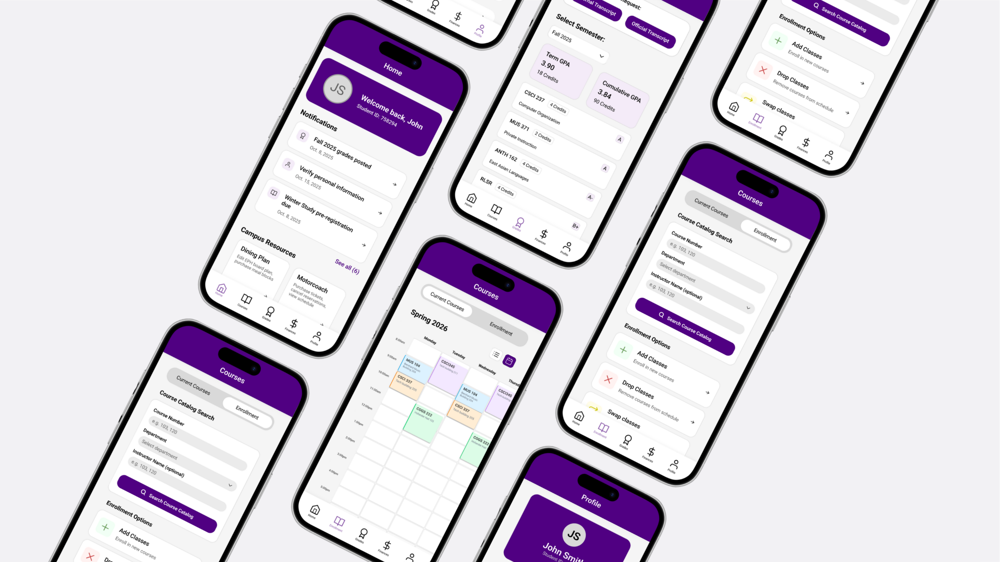
Overview
The Williams College Student Records website is used by students for everything from enrolling in classes, to checking grades, to managing financial aid, and more.
Despite its many uses, the site is a bit of a running joke among students. It's impossible to navigate, poorly labeled, and so unintuitive that the college routinely has to email students to help them navigate to certain tasks.
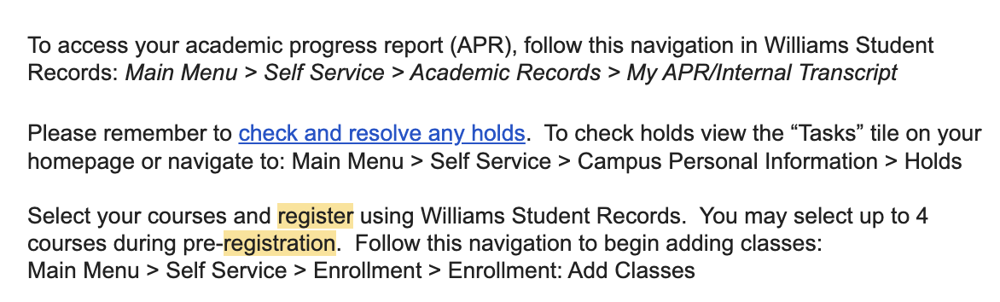
College email explaining how to navigate various parts of the website
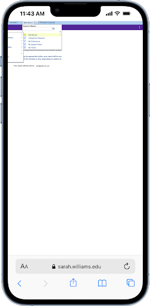
The mobile view of the main menu on the student services website (unusable)
Given how important the information on this website is, I find it unacceptable that the site is so difficult to navigate. Its maze-like organization leads the user in clicking frenzies until they end up back on the page where they started. After hearing the same complaints from classmates, I established my goal: to redesign the information architechture of Williams College student services to be clear, communicative, and efficient.
I also chose to do this redesign in the form of a mobile app—partly due to how utterly inaccessible the website is on mobile, and partly as a personal challenge/opportunity for growth, as designing for a small screen forced me to prioritize what really mattered: a clear, efficient information architecture.
Research
Content Inventory
After testing, I performed a full content inventory to understand the scope and redundancy of the site. This involved recording the titles and URLs of every page within the website. There were easily over 100 pages, many of which with outdated, repetitive, or missing information, broken links or odd amounts of whitespace.
Findings
- Circular navigation—some pages, like "personal information" or "student records" were linked to 3-4 times
- External links to multiple subdomains (without indication that these links were external), creating inconsistent experiences
- Excessive clicking—users have to click through pages and pages to reach commonly-needed actions such as course enrollment or viewing grades
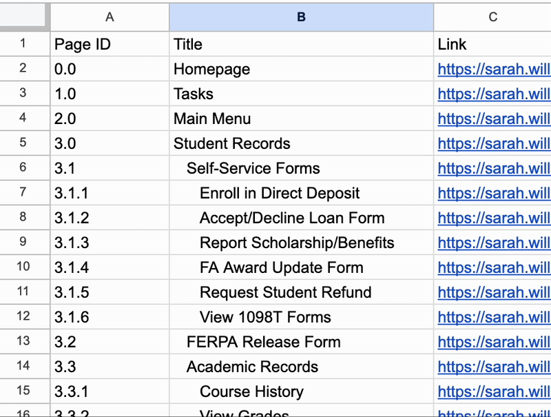
Spreadsheet showing every page of the students services website, every instance of the "addresses" page highlighted in red to show page repetition
Card Sorting
Content inventory allowed me to pare down any excessive or repetitive pages. However, there were still an enourmous amount of different ways to sort through information. The current biggest issue with the student services website is that it's difficult to tell what each menu or subpage leads to, either due to ambiguous naming or hiding items behind links . Where should enrollment be found? Contact information?
I had a foundation structure from the existing website—but I wanted to make changes that would actually reflect the priorities of students. Thus, I decided to conduct card sorting, in order to see how students naturally group pieces of information.
Objective: Discover how students would naturally organize content — and which items didn't belong anywhere.
Method
6 participants grouped 20 items into logical categories in an open card sort (meaning they created and labelled their own categories).
Emerging Categories
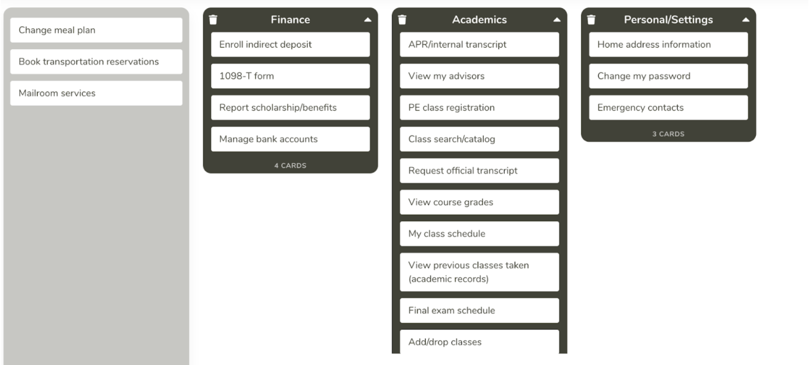
One participant's created card categories
- Academics: Enrollment, Grades, Transcripts
- Finances: Billing, Financial Aid, Payment Plans
- Personal: Profile, Address, ID Information
- Campus Life/Miscellaneous: Meal Plans, Housing, Transportation
The fourth category was the least consistent across users. Some left it unlabelled, some chose "campus life", others put "meal plans" in finance and "transportation" in personal.
I also put a short questionnaire before the card sorting, asking participants how they most commonly used Student Records.
"I spend most of my time enrolling in classes, searching for classes, and checking my grades. Everything else I look at maybe once a year, or if an email tells me to."
Brainstorming
Since I was redesigning the site as a mobile app, I had the chance to take advantage of the navigation bar at the bottom. These buttons, always accessible, would be quick and easy for users to navigate to. Thus, I spent a long time deciding how to organize the high-level structure of the app in the nav bar.
What is clear to a user? What information are they looking for in this app? What does "home" entail? Is it clear that profile includes settings as well? All of these were questions I began to wonder while mapping out my user flow. I started with the main categories that resulted from card sorting, then created some variants.
Options
- Home / Academics / Finances / Campus Life / Profile
- Academics / Finances / Search / Campus Life / Profile
- Home / Academics / Finances / Search / Profile
- Home / Courses / Enrollment / Finances / Profile
Decisions
- Removed "Search": The goal was discoverability without needing to search.
- Merged "Campus Life" content into "Home → Resources": As already expressed through the post-card sorting survey, these resources weren't accessed frequently enough to warrant an entire tab of the navigation menu
- Prioritized frequent actions: enrollment and grades became separate top-level items, since they are so frequently used.
Thus, I ended up choosing to start with Home / Grades / Enrollment / Finances / Profile. I created a basic tree mapping out the navigation of all subpages on the website.
Tree Testing
Before going ahead with implementation, I wanted to test my reorganization of the information on the site. This meant tree testing—a way to have users navigate the hypothetical layout of the website, without as much of an emphasis on visual design.
Tasks
- Task 1: Request to pass/fail a class
- Task 2: View final exam schedule
- Task 3: Request to change campus name
- Task 4: Drop a course
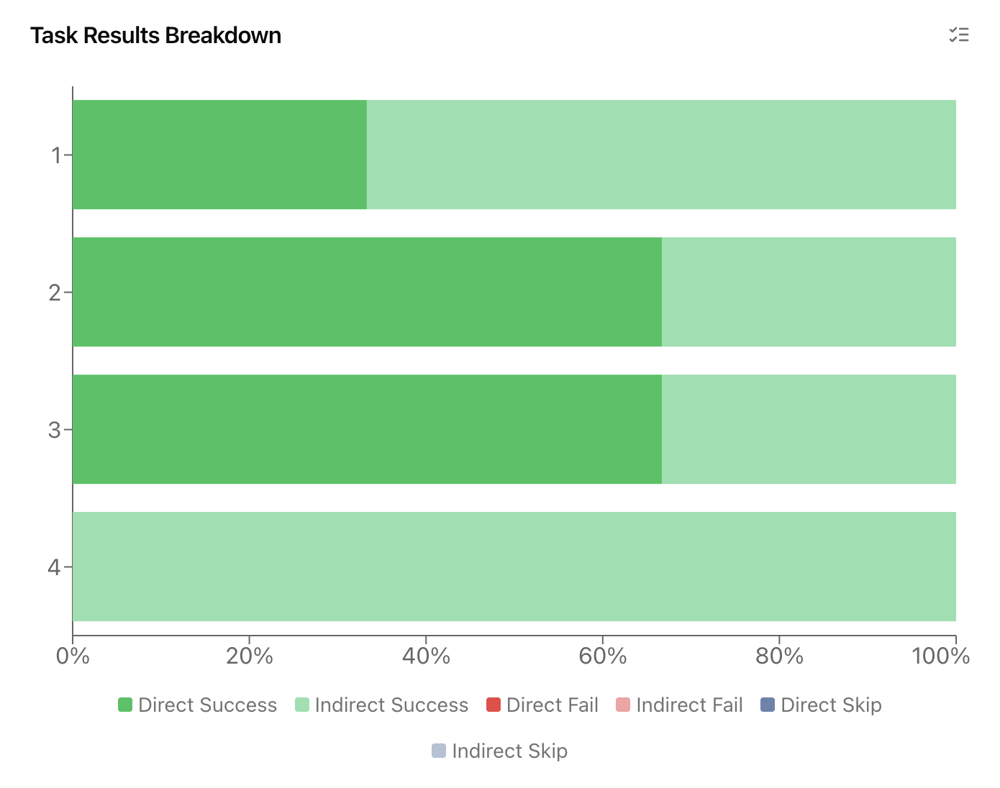
Graph displaying how directly each task answer was found
Overall, times to find items were quite short—however, our main issue was directness. In fact, out of all the tasks completed by participants, only 42% of destinations were chosen without backtracking. Specifically, users struggled to differentiate between grades and enrollment. For adding classes or checking grades, the difference was clear. However, for more ambiguous actions such as pass/fail a class, or drop an extra class, more misclicks occurred. In fact, all users had indirect success when trying to drop a course.
I figured this confusion came from the labelling—enrollment seemed to describe more anything to do with taking action in regards to classes, whereas grades was much more passive. I thus decided to rename "enrollment" to "courses", so users better understood that the tab referred to current classes in addition to enrollment. This way, anything unrelated to grades would be redirected to the "courses" tab (thus solving the "drop a course" ambiguity).
I also decided to put actions such as pass/fail requests at the top of the screen when designing, as this quicker, simpler action (in comparison to looking through grades) would then not be missed.
Design
Wireframes
Starting with mobile wireframes, I focused on reducing depth — the number of screens users had to navigate to complete a task.
- Enrollment combines class search, add/drop/swap into one flow.
- Home page includes quick links for common actions and a notification area for deadlines and announcements.
A note: I restricted myself to using features that the website already had—so I didn't, for instancek completely restructure and redesign the class search process, but instead improved the way in which class search can be accessed.
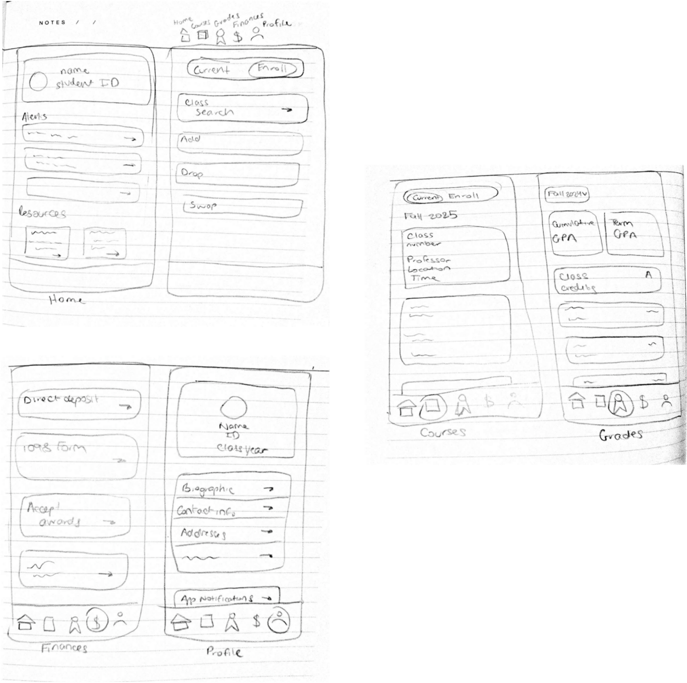
High-Fidelity Design
The final design was created in Figma. I stuck to the college's style guide for color, and kept a simplistic typography.
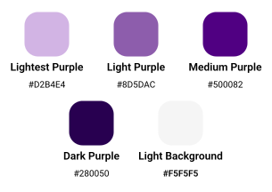
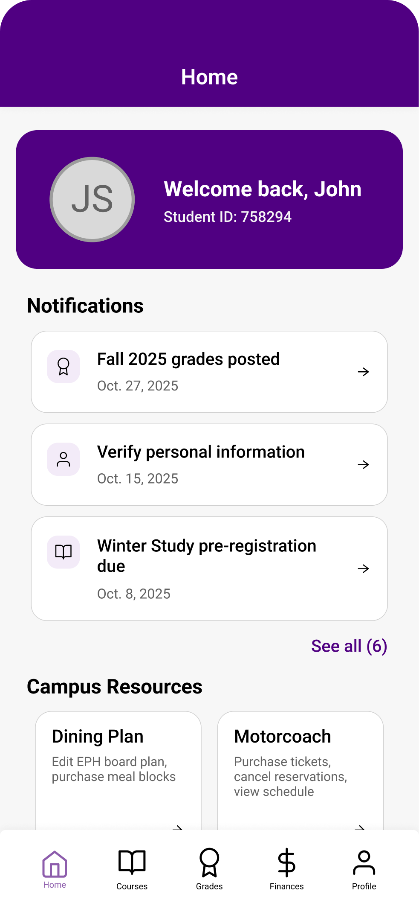
The landing page includes the student's ID number, which is frequently needed for documents. Notifcations are displayed below, which link to different parts of the app. I display only the most recent ones, to avoid hiding the campus resources. Since these are somewhat miscellaneous (the same problem that was encountered in card sorting), I wanted them to be easily discoverable—the fold indicates that the user can scroll. The icons (arrow vs. link-out) indicate what happens when the user clicks the resource tiles.
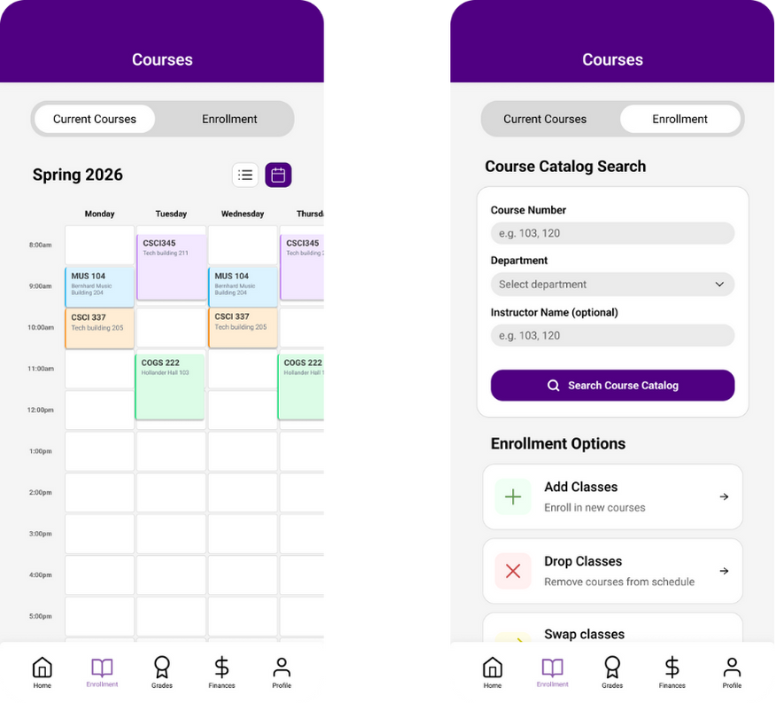
Current courses and enrollment information, in one tab of the mobile app
As can be seen above, I used a toggle to allow the user to switch between viewing their current courses, and enrolling in new courses. The app first opens on current courses, since they are more commonly viewed—a theme of my redesign is that almost everything that needs to be accessed more often, is higher up on the information tree hierarchy. Note the user can also switch between a list and calendar (which scrolls horizontally) view.
In addition, class search and enrollment options have been condensed to one page, again to reduce the number of interactions needed to reach these features.
The grades page includes request actions at the top, so they can be quickly accessed and won't be missed at the bottom of the screen. The user can view different semester grades via a dropdown menu, and their cumulative gpa is calculated, so they don't have to manually calculate it.
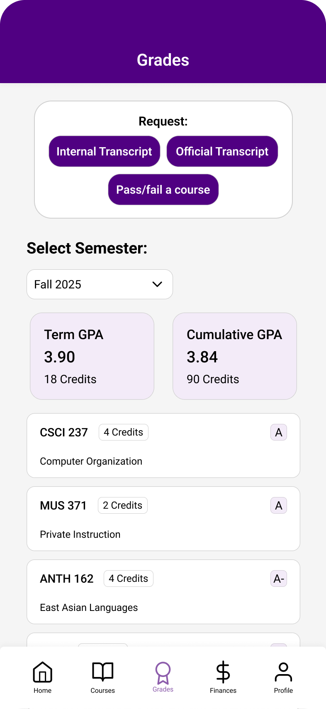
Finally, feel free to view the entire prototype here on Figma
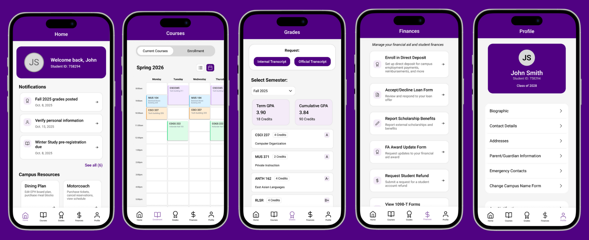
Usability Testing
Lastly, I wanted to compare efficiency and satisfaction between the original website and the redesigned prototype. asked five new people to complete the same tasks from the original navigation testing.
| Task | Avg. Time | Error Incidence | Error Frequency |
|---|---|---|---|
| Add a course to your cart | 10 seconds | 0% | 0% |
| Request to change your registered name on campus | 7 seconds | 0% | 0% |
| Change your board meal plan | 5 seconds | 10% | 0.05% |
| Request a pass/fail class | 12 seconds | 20% | 10% |
All in all, error incidence with the redesign was far lower. Of course, time comparisons aren't completely fair, as the original requires some time to load pages, whereas Figma prototype loading is immediate. However, consistently across the board, users completed tasks in testing far quicker, and more directly without errors.
The big improvement is that by reorganizing the tabs and flow of the website, there are no longer deep paths of endless clicking users must go through. Thus, the penalty for misclicking is far smaller, and less time-consuming.
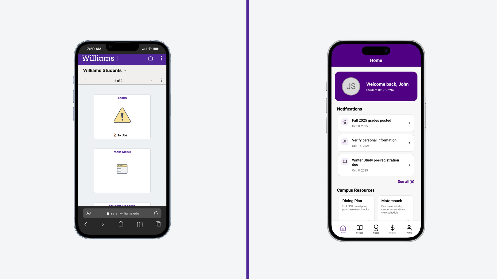
Comparison between the original and new mobile landing pages
Going Forward
If expanded beyond a one-week sprint, I would:
- Expand to smaller features, such as the process of adding courses and searching. I've completed the overarching information architecture, but there are still many more frustrating aspects to this website
- Experiment with adding features that are not currently on "Student Records" but are scattered throughout various pages on the Williams College website—for example, the yearly academic schedule, degree requirement information, etc.
- Conduct testing with a higher sample size. Simply due to time constraints I limited how much testing and how many participants I involved.
This project deepened my understanding of information architecture as the foundation of UX design. Methods such as card sorting and tree testing showed me just how much a user's mental model of a website can vary.
Through this process, I also learned how valuable iterative validation is. Assuring myself that I was making the right choices through card sorting and tree testing allowed me as a designer to avoid wasting time and stay focused on features that directly contributed to my main goal.